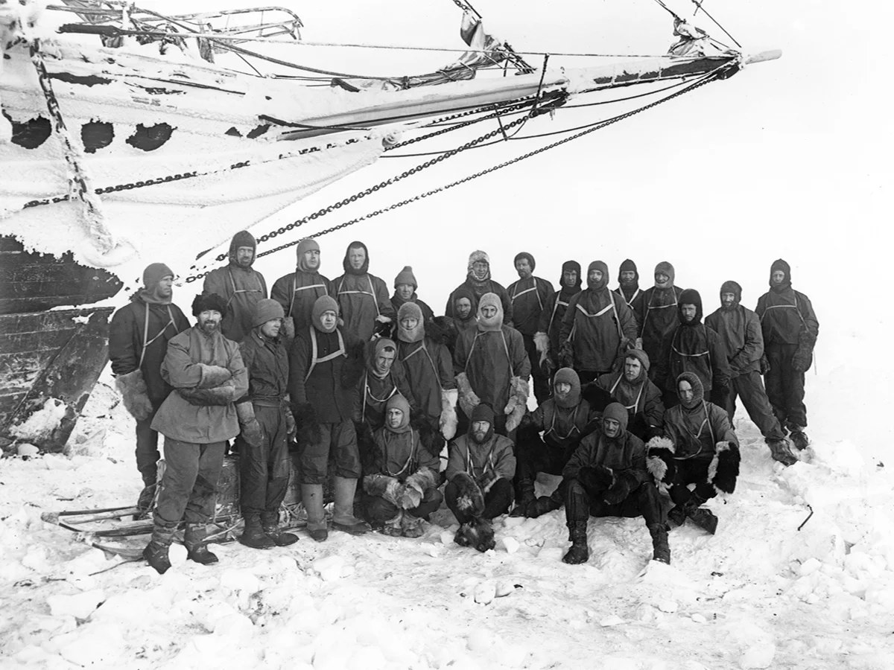
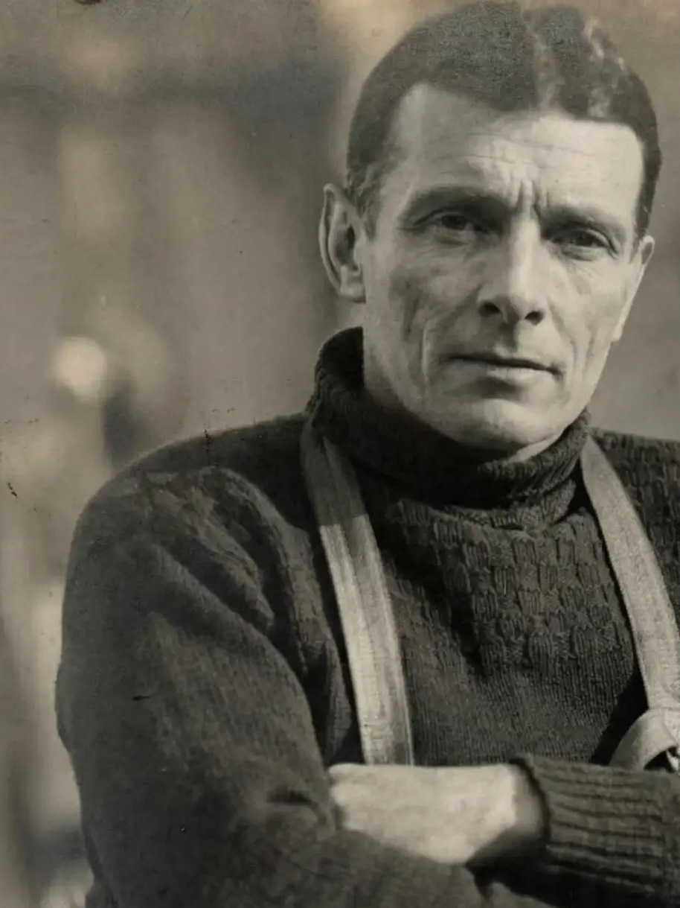
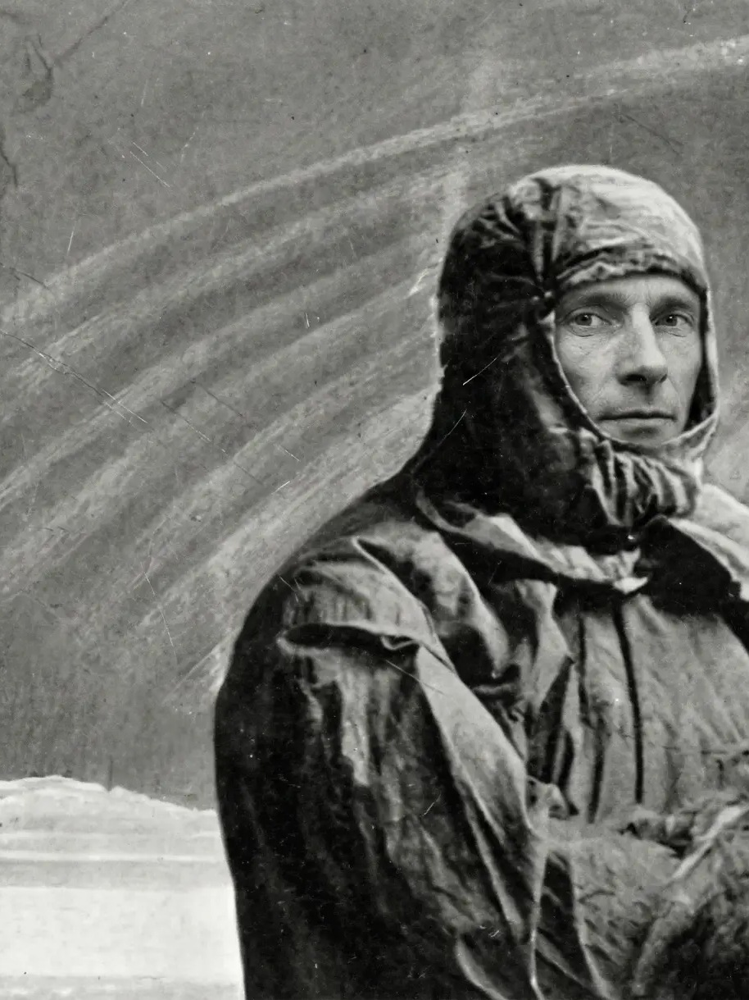
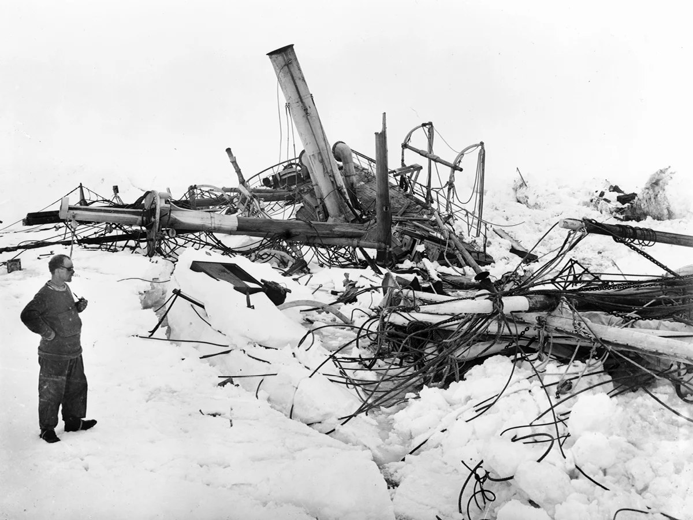
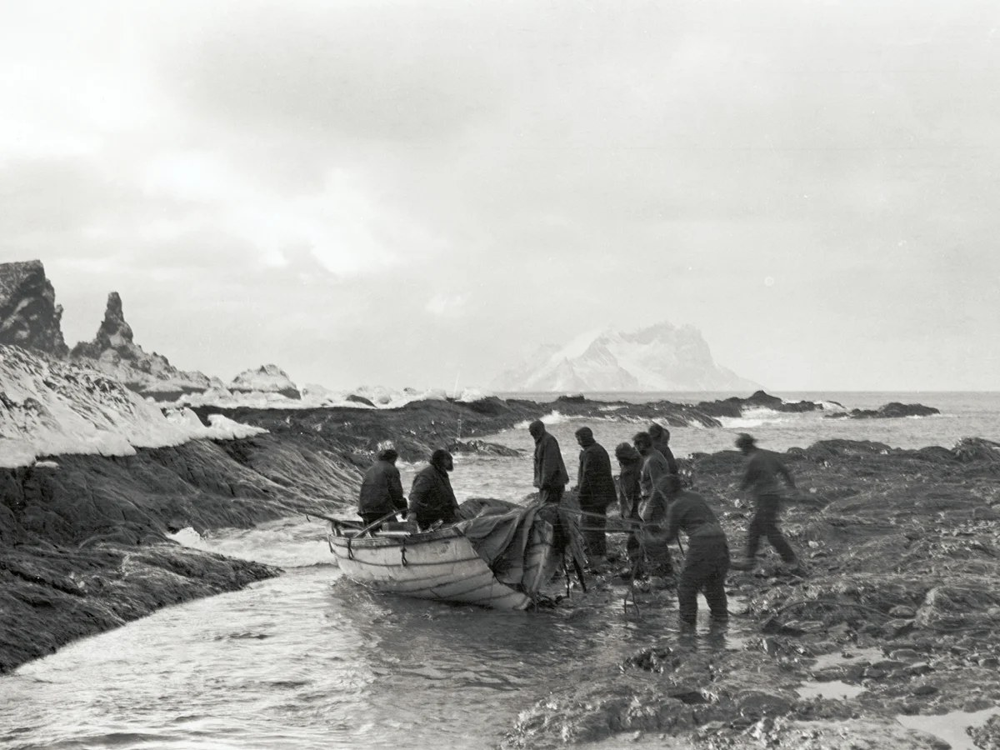
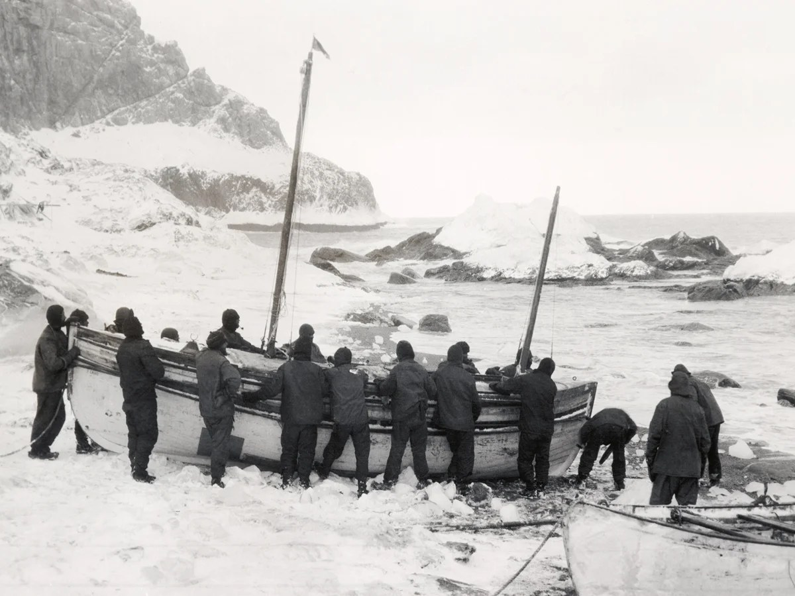

FIG. I — Prof. A. Long
Expeditioner & Vice Chancellor

FIG. II — Leader, A. Long
In Polar Attire

On Leadership & Moral Fortitude
It has come to the attention of this publication that Professor Antony Long — esteemed son of Dulwich College, veteran of the Greenland ice sheet, rescuer of stricken colleagues in Spitsbergen, and Vice Chancellor of Durham University — has this day commenced his sixtieth year upon the globe.
Born but twenty minutes after his elder twin, Professor Long displayed ambition from the earliest age. Like the illustrious Ernest Shackleton, likewise of Dulwich College, he has long favoured the Polar regions over more temperate climates. His expeditions have rendered him intimately acquainted with ice, wind, and adversity. Where others perceive desolation, he discerns opportunity.

A Rescue of Uncommon Fortitude
In the winter of 1994, during an expedition to the Svalbard archipelago, a fellow team member suffered a severe sprain of the ankle whilst traversing a glacial field above Longyearbyen. Unable to walk, and with the temperature descending rapidly, the situation demanded immediate and decisive action.
Professor Long — then a man of eight-and-twenty years, but already possessed of the bearing of a seasoned expeditioner — hoisted his colleague upon his back and carried her, without complaint, across eight miles of hostile terrain to the safety of the base camp. A polar bear was observed at a distance of some two hundred yards. The Professor did not alter his pace.

A Life of Uncommon Achievement
This special edition of the Gazette records, for posterity, the life and achievements of a man of uncommon fortitude — a Dulwich man, in the finest tradition of the College. From the glaciers of Svalbard to the lecture halls of Durham, from the ice cores of Greenland to the corridors of academic power, Professor Long has conducted himself with the quiet certainty of one who has never once doubted that the correct path, however arduous, is the one worth taking.
Born but twenty minutes after his elder twin, the Professor has never once acknowledged this as a disadvantage. The Gazette considers it a formative lesson in patience.
Contents of This Edition
On Leadership & Moral Fortitude · A Rescue of Uncommon Fortitude · The Meteorological Forecast · Classified Notices
Correspondence & Letters to the Editor · A Phrenological Analysis · An Interview at Sixty · The Expeditionary Record
The Gentleman's Wardrobe · A Brief History of the Dulwich College Polar Society · Shackleton & Long: A Comparative Study · The Ode to the Expedition Leader
Frank Hurley's photographs of the Endurance expedition, 1914–17, by kind permission of the Royal Geographical Society